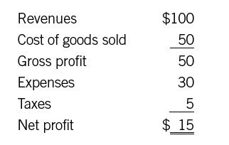

Cracking the Code of the Income Statement
Note that word we used in the title to this chapter: code. Unfortunately, an income statement can often seem like a code that needs to be deciphered.
Here’s the reason. In books like this one—and even later in this book—you will often find cute little sample income statements. They look something like this:

A bright fourth-grader wouldn’t need much help figuring out that one, once she had a little help with definitions. She could even do the math without a calculator. But now check out a real-world income statement—your own company’s or one that you find in some other company’s annual report. If it’s a detailed statement used internally, it may go on literally for pages—line after line after line of numbers, usually in print so small you can barely read them. Even if it’s a “consolidated” statement like those you find in annual reports, it’s likely to contain a whole bunch of lines with arcane labels like “income from equity affiliates” (that’s from Exxon Mobil) or “amortization of purchased intangible assets” (from Hewlett-Packard). It’s enough to make anybody but a financial professional throw up his hands in dismay (and many of the pros get confused, too).
So bear with us while we run through some simple procedures for curling up with an income statement. Boosting your financial intelligence shouldn’t involve an attack of heartburn, and learning these steps may save you from just that.
READING AN INCOME STATEMENT
Before you even start contemplating the numbers, you need some context for understanding the document.
The Label
Does it say “income statement” at the top? It may not. It may instead say “profit and loss statement” or “P&L statement,” “operating statement” or “statement of operations,” “statement of earnings” or “earnings statement.” All these terms refer to the same document. Often the word consolidated appears as part of the title. If it does, you are probably looking at an income statement for a whole company, with totals for major categories rather than highly detailed line items.
The many different names for an income statement could drive a person nuts. We work with a client that calls the income statement in its annual report the statement of earnings. Meanwhile, one of the company’s major divisions calls its income statement an income statement—and another major division calls it the profit and loss statement! With all these terms for the same thing, one might get the idea that our friends in finance and accounting don’t want us to know what is going on. Or maybe they just take it for granted that everybody knows that all the different terms mean the same thing. However that may be, in this book we will always use the term income statement.
Incidentally, if you see “balance sheet” or “statement of cash flows” at the top, you have the wrong document. The label pretty much has to include one of those phrases we just mentioned.
What It’s Measuring
Is this income statement for an entire company? Is it for a division or business unit? Is it for a region? Larger companies typically produce income statements not just for the whole organization but also for various parts of the business, right down to individual stores, plants, or product lines. H. Thomas Johnson and Robert S. Kaplan, in their classic book Relevance Lost, tell how General Motors developed the divisional system—with income statements for each division—in the first half of the twentieth century.1 We can be glad it did. Creating income statements for smaller business units has provided managers in large corporations with enormous insights into their units’ financial performance. Remember that these division or business-unit financial statements usually require allocations or estimates for costs that apply to more than one division or unit.
Once you have identified the relevant entity, you need to check the time period. An income statement, like a report card in school, is always for a span of time: a month, quarter, or year, or maybe year-to-date. Some companies produce income statements for a time span as short as a week. Incidentally, the figures on large companies’ income statements are usually rounded off and the last zeros are left off. So look for a little note at the top: “in millions” (add six zeros to the numbers) or “in thousands” (add three zeros). This may sound like common sense, and indeed it is. But we have found that seemingly trivial details such as this are often overlooked by financial newcomers.
“Actual” Versus “Pro Forma”
Most income statements are actual, and if there’s no other label, you can assume that is what you’re looking at. They show what “actually” happened to revenues, costs, and profits during that time period. If you are looking at a public company’s statement, you can assume it has been compiled according to the generally accepted principles of accounting (GAAP). If it is a privately held company, one of the questions you’ll need to ask is whether the numbers are based on GAAP principles. (We put “actually” in quotes to remind you that any income statement has those built-in estimates, assumptions, and biases, which we will discuss in more detail later in this part of the book.)
There are also pro forma and non-GAAP income statements. Pro forma means that the income statement is a projection. If you are drawing up a plan for a new business, for instance, you might write down a projected income statement for the first year or two—in other words, what you hope and expect will happen in terms of sales and costs. That projection is called a pro forma. A non-GAAP income statement may exclude any unusual or one-time charges, or it may relax some GAAP rules. (See chapter 4 for more detail.) Say a company has to take a big write-off in a particular year, resulting in a loss on the bottom line. (More on write-offs later in this part.) Along with its actual income statement, it might prepare one that shows what would have happened without the write-off. To add to the confusion, many companies used to call these non-GAAP statements pro forma income statements. Today that term is reserved for projections.
Pro forma income statements—projections—are of course just that. They are educated guesses about the future. Non-GAAP income statements are different. They reflect reality, but they have to be interpreted with care. When companies prepare such documents for public consumption, the ostensible purpose is to let you compare last year (when there was no write-off) with this year (if there hadn’t been that ugly write-off). But sometimes there is a subliminal message, something along the lines of, “Hey, things aren’t really as bad as they look—we just lost money because of that write-off.” Of course, the write-off really did happen, and the company really did lose money. Most of the time, you want to look at the GAAP as well as the non-GAAP statements, and if you have to choose just one, the GAAP statement is probably the better bet. Cynics sometimes describe non-GAAP statements as income statements with all the bad stuff taken out. That’s not always fair—but sometimes it is.
The Big Numbers
No matter whose income statement you’re looking at, there will be three main categories. One is sales, which may be called revenue (it’s the same thing). Sales or revenue is always at the top. When people refer to “top-line growth,” that’s what they mean: sales growth. Costs and expenses are in the middle, and profit is at the bottom. (If the income statement you’re looking at is for a nonprofit, “profit” may be called “surplus/deficit” or “net revenue.”) There are subsets of profit that may be listed as you go along, too—gross profit, for example. We’ll explain all of these in chapter 9.
You can usually tell what’s important to a company by looking at the biggest numbers relative to sales. For example, the sales line is usually followed by “cost of goods sold,” or COGS. In a service business, the line is often “cost of services,” or COS. Occasionally, you might also see “cost of revenue.” If that line is a large fraction of sales, you can bet that management in that company watches COGS or COS very closely. In your own company, you will want to know exactly what is included in line items that are relevant to your job. If you’re a sales manager, for instance, you’ll need to find out exactly what goes into the line labeled “selling expense.” As we’ll see, accountants have some discretion as to how they categorize various expenses.
By the way: unless you’re a financial professional, you can usually ignore items like “amortization of purchased intangible assets.” Most lines with labels like that aren’t material to the bottom line anyway. And if they are, they ought to be explained in the footnotes.
Comparative Data
The consolidated income statements presented in annual reports typically have three columns of figures, reflecting what happened during the past three years. Internal income statements may have many more columns. You may see something like this, for example:
Or like this:
Tables of numbers like these can be intimidating. But they don’t need to be.
In the first case, “% of sales” is simply a way of showing the magnitude of an expense number relative to revenue. The revenue line is taken as a given—a fixed point—and everything else is compared with it. Many companies set percent-of-sales targets for given line items, and then take action if they miss the target by a significant amount. For instance, maybe senior executives have decided that selling expenses shouldn’t be more than 12 percent of sales. If the number creeps up much above 12 percent, the sales organization had better watch out. It’s the same with the budget and variance numbers. (“Variance” just means difference.) If the actual number is way off budget—that is, if the variance is high—you can be sure that somebody will want to know why. Financially savvy managers always identify variances to budget and find out why they occurred.
In the second case, the statement simply shows how the company is doing compared with last quarter or last year. Sometimes the point of comparison will be “same quarter last year.” Again, if a number has moved in the wrong direction by a sizable amount, someone will want to know why.
In short, the point of these comparative income statements is to highlight what is changing, which numbers are where they are supposed to be, and which ones are not.
Footnotes
An internal income statement may or may not include footnotes. If it does, we recommend reading them very carefully. They are probably going to tell you something that the accountants think everybody should be aware of. External income statements, like those found in annual reports, are a little different. They usually include many, many footnotes. You may want to scan them: some may be interesting, others not so much.
Why all the footnotes? In cases where there is any question, the rules of accounting require the financial folks to explain how they arrived at their totals. So most of the notes are like windows into how the numbers were determined. Some are simple and straightforward, such as the following from Walmart’s Form 10-K (the annual report required by the Securities and Exchange Commission) for the year ended January 31, 2011:
Cost of Sales
Cost of sales includes actual product cost, the cost of transportation to the Company’s warehouses, stores and clubs from suppliers, the cost of transportation from the Company’s warehouses to the stores and clubs and the cost of warehousing for our Sam’s Club segment and import distribution centers.
But other footnotes can be long and complex, such as the following footnote fragment from Hewlett-Packard’s Form 10-K for the fiscal year ending October 31, 2010:
HP’s current revenue recognition policies, which were applied in fiscal 2010 and fiscal 2009, provide that, when a sales arrangement contains multiple elements, such as hardware and software products, licenses and/or services, HP allocates revenue to each element based on a selling price hierarchy. The selling price for a deliverable is based on its vendor specific objective evidence (“VSOE”) if available, third party evidence (“TPE”) if VSOE is not available, or estimated selling price (“ESP”) if neither VSOE nor TPE is available. In multiple element arrangements where more-than-incidental software deliverables are included, revenue is allocated to each separate unit of accounting for each of the non-software deliverables and to the software deliverables as a group using the relative selling prices of each of the deliverables in the arrangement based on the aforementioned selling price hierarchy. If the arrangement contains more than one software deliverable, the arrangement consideration allocated to the software deliverables as a group is then allocated to each software deliverable using the guidance for recognizing software revenue, as amended.
This is one of nine paragraphs describing revenue recognition, a topic we discuss in chapter 7. Don’t get us wrong: it’s important that Hewlett-Packard explain its approach to the issue. Decisions about when revenue is recognized are a key element of the art of finance. Nor should you assume that Walmart always has simple footnotes and Hewlett-Packard always has complex ones. Our examples here merely illustrate the diversity of the types of footnotes you’ll find relating to the income statement in an annual report. Sometimes you find out some very interesting things about companies by reading the footnotes, so have fun! (Did we just say that footnotes can be fun?) Incidentally, if you can’t find the explanations you need in the notes, ask your CFO. He ought to have the answers.
ONE BIG RULE
So those are the rules for reading. But don’t forget the one big rule that should be in the forefront of your thinking whenever you confront an income statement. That rule says:
Remember that many numbers on the income statement reflect estimates and assumptions. Accountants have decided to include some transactions here and not there. They have decided to estimate one way and not another.
That is the art of finance. If you remember this one point, we assure you that your financial intelligence already exceeds that of many managers.
So let’s take a more detailed look at some of the key categories. If you don’t have another income statement handy, use the sample in the appendix for reference. Sure, it will all seem complicated at first. But you will soon grow accustomed to the format and the terminology. As you do, you’ll find that you are beginning to understand what the income statement is telling you.